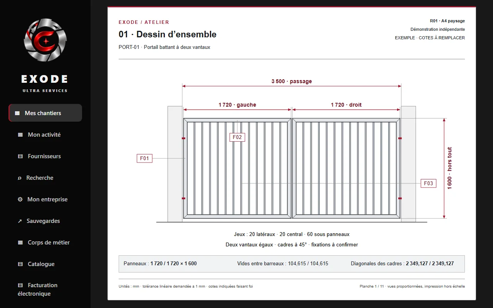

Métiers du bâtiment
Ultra Services
Le chantier avance.
L’outil suit.
Des premières cotes aux fiches de débit, un même dossier pour organiser le travail. Une application pensée d’abord pour les artisans de la métallerie, sur Windows et Android.
Entrer dans le projet
Fiche de débit · Capture réelle, données de démonstration. Cliquez pour agrandir.